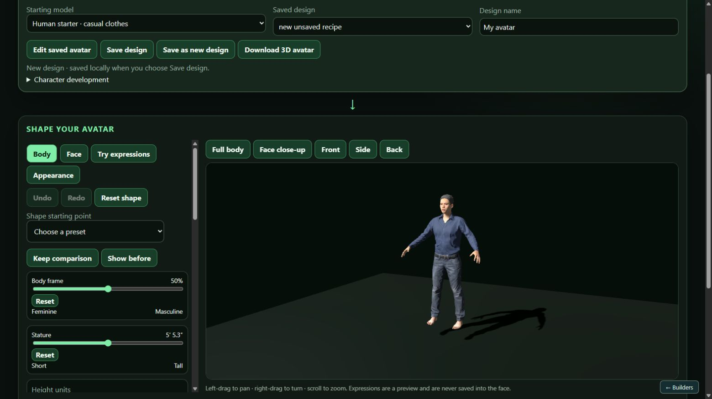
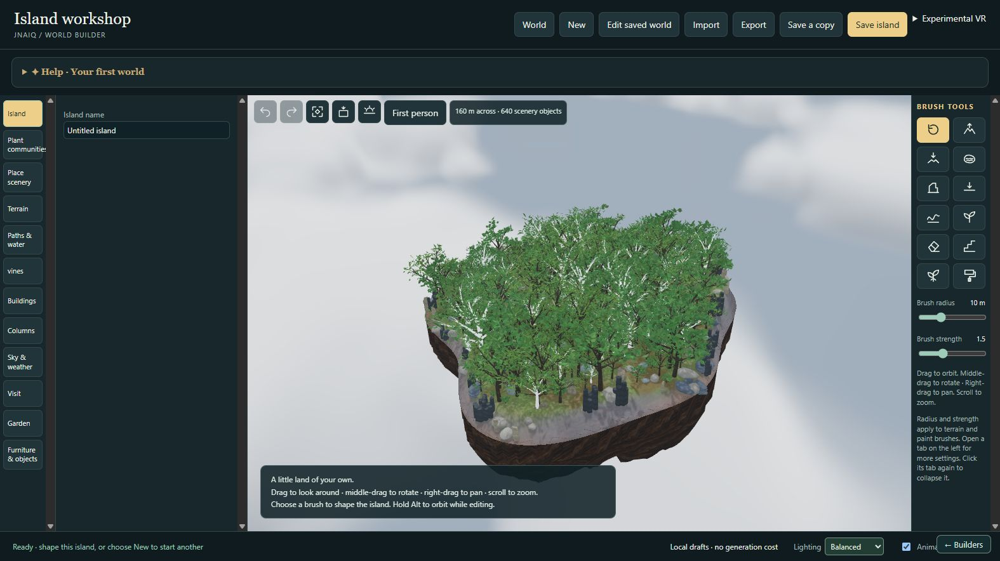

A body. A world.
Make them your own.
Shape an avatar, build a landscape, and keep your original designs on your own computer. Avatar Creator and World Builder work on their own or with JNAIQ.
Download JNAIQ Builders 0.2.0-preview.1
Choose Get-JNAIQ-Builders.zip under Assets. This curated preview includes one editable human starter, six furniture objects, landscape materials and procedural scenery.


Install on Windows
- Install Python 3.10 or newer with Add Python to PATH enabled. Allow about 3 GB free and use a WebGL-capable browser.
- Extract the helper ZIP into a new folder, then run DOWNLOAD_BUILDERS.bat. It downloads, verifies and extracts all three packs.
- Open JNAIQ-Builders, run INSTALL_BUILDERS.bat, then START_BUILDERS.bat. Keep the server window open while editing.
Save designs and islands to retain editable originals; export GLB avatars or world JSON for JNAIQ. Back up your entire Builders folder, including data and imported models. Use a fresh folder for this preview.
Experimental VR is off by default; physical-headset compatibility has not been tested.
Full installation, JNAIQ connection and export guide · Asset credits